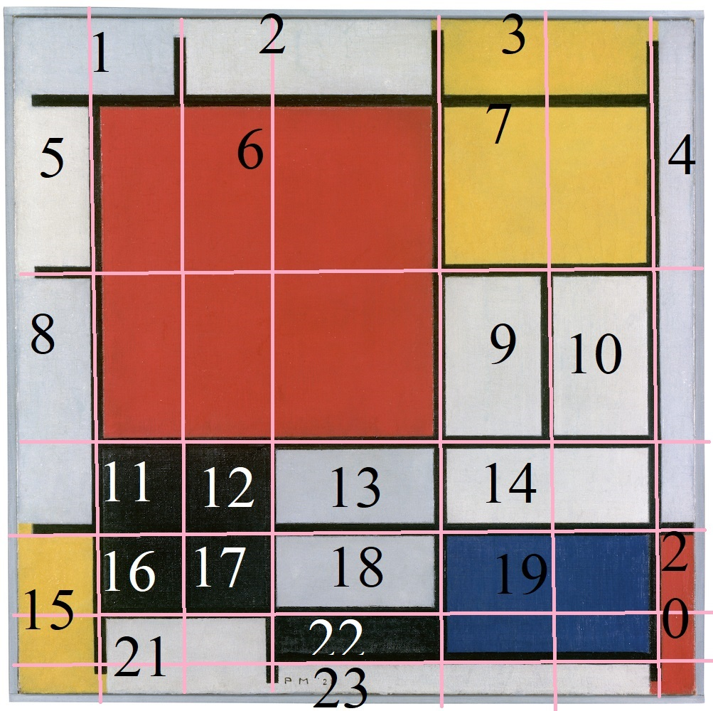
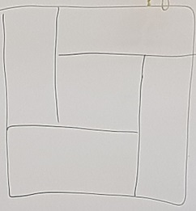
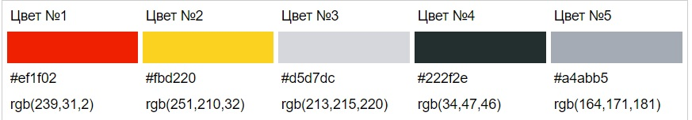

У лукоморья дуб зелёный;
Златая цепь на дубе том:
И днём и ночью кот учёный
Всё ходит по цепи кругом;
Идёт направо - песнь заводит,
Налево - сказку говорит.
Там чудеса: там леший бродит,
Русалка на ветвях сидит;
Следы невиданных зверей;
Избушка там на курьих ножках
Стоит без окон, без дверей;
Там лес и дол видений полны;
Там о заре прихлынут волны
На брег песчаный и пустой,
И тридцать витязей прекрасных
Чредой из вод выходят ясных,
И с ними дядька их морской;
Там королевич мимоходом
Пленяет грозного царя;
Там в облаках перед народом
Через леса, через моря
Колдун несёт богатыря;
В темнице там царевна тужит,
А бурый волк ей верно служит;
Там ступа с Бабою Ягой
Идёт, бредёт сама собой,
Там царь Кащей над златом чахнет;
Там русский дух... там Русью пахнет!
И там я был, и мёд я пил;
У моря видел дуб зелёный;
Под ним сидел, и кот учёный
Свои мне сказки говорил.
KY-018 Фоторезистор
Фото модуля:
|
Схема подключения к ардуино:
|
||||
Краткое описание модуля:“KY-018″ — модуль содержит фоторезистор (датчик освещенности), который может применяться для измерения интенсивности света или определения его наличия/отсутствия. При отсутствии света сопротивление фоторезистора большое и доходит до 1 мОм, а при его освещении падает до нескольких Ом. Фоторезисторы – это полупроводниковые фоточувствительные устройства (сенсоры), которые имеют высокую чувствительность, быстрый отклик, устойчивые спектральные характеристики и широко применяются в видеокамерах, в садовых светильниках на солнечных батареях, датчиках освещенности, ночниках и других устройствах контроля освещения. |
|||||
Код программы для подключения к ARDUINO:
|
|||||
Ссылки на источники:
|
|||||
Датчик для избегания препятствий KY-032
Фото модуля: |
Схема подключения к ардуино: |
||||
Краткое описание модуля:“KY-032” – модуль представляет собой инфракрасный датчик обнаружения препятствий. Устройство имеет передатчик (IR LED), излучающий инфракрасный луч частотой 38 кГц, который принимается приемником (IR receiver) на плате. При приближении какого-либо предмета к сенсору (близость регулируется потенциометром) на выходе “OUT” появляется низкий уровень напряжения и включается светодиод на плате модуля. |
|||||
Код программы для подключения к ARDUINO:
|
|||||
Ссылки на источники:
|
|||||
KY-027 MAGIC LIGHT CUP MODULE
Фото модуля: |
Схема подключения к ардуино: |
||||
Краткое описание модуля:"Arduino KY-027 Magic Light Cup Module" - представляет собой набор из двух плат, каждая из которых имеет светодиод и ртутный переключатель наклона. Используя PWM для управления светодиодами на каждом модуле, вы можете добиться эффекта «волшебного» перехода света от одного модуля к другому при их наклоне. |
|||||
Код программы для подключения к ARDUINO:
|
|||||
Ссылки на источники:
|
|||||
О выполнении дз
  